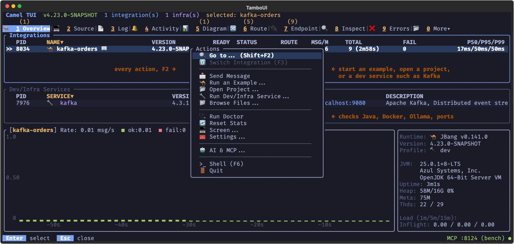
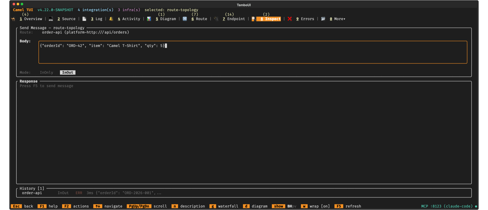

Camel TUI Actions, Settings and Themes
The TUI is configured from inside: the actions menu (F2) holds what is not tied to one tab, the settings are kept in ~/.camel-cli.properties, and the themes change the whole look. This page also covers the embedded shell, opening the TUI in a browser, and recording demos.
See Camel TUI for getting started and the other pages.
Key Features
-
Actions menu — F2: settings, themes, send a message, the doctor, MCP info
-
Embedded shell — F6: run camel commands without leaving the TUI
-
Themes — dark and light themes
-
Settings — start tab, rate units, validation, AI provider and more
-
Web browser access — the TUI in a browser tab
-
Recording demos — record a session as a tape and convert it to a GIF
Actions Menu (F2)
Press F2 to open the actions menu with quick access to common operations:
| Action | Description |
|---|---|
Go to… (Shift+F2) | Jump to a tab by name. |
Switch Integration (F3) | Select another running integration. |
Send Message | Send a test message to any route with custom body, headers, and exchange pattern. |
Run an Example… | Browse and launch built-in Camel examples from the catalog. |
Open Project… | Open a project directory in the Source tab for browsing and editing. Run with F10. |
Run Dev/Infra Service… | Start infrastructure services (Kafka, databases, etc.) in Docker. |
Browse Files… | Browse the integration’s source files with syntax highlighting. |
Run Doctor | Check your environment: Java, JBang, Maven, Docker, Ollama, AI and MCP, port conflicts, disk space. |
Reset Stats | Reset all statistics and metrics for the selected integration. |
Stop All | Stop running integrations and/or infrastructure services. |
Screen… | Take a screenshot (SVG, text, or ANSI art), record the session as a |
Settings… | Change the TUI preferences: theme, tabs, panels, editor, proxy and AI (see Settings). |
AI & MCP… | AI Prompt, Setup AI and AI Log (see AI), and MCP Info and MCP Log: the MCP server of the session and the calls agents made to it. Called AI… when the MCP server is off. |
Shell (F6) | Open the embedded Camel CLI shell. |
Quit | Quit the TUI, with the same confirmation as pressing q. The last entry of the menu, so quitting is one menu away on tabs and in input fields where q is taken by something else. Integrations started from the TUI keep running after it quits (until the terminal closes); when some do, the confirmation says how many, and s stops them and quits. |

Sending Test Messages
Select Send Message from the F2 menu (or press F2 then choose it):

-
Choose the route — use left/right arrows to pick the target route
-
Enter the body — type the message body, or use
file:path/to/fileto load from a file -
Add headers — press + to add headers as key=value pairs
-
Set exchange pattern — toggle between InOnly (fire-and-forget) and InOut (request/reply)
-
Press Enter to send
For InOut exchanges, the response is displayed below with status, elapsed time, response headers, and body. Press P to toggle pretty-printing for JSON/XML responses.
Doctor
The Doctor checks your development environment and reports issues:
-
Java version (17+ required, 21+ recommended)
-
Camel catalog availability
-
JBang installation
-
Maven repository connectivity
-
Docker/Podman availability
-
Ollama: whether it runs, and the models it has (the AI panel needs one of 14B or more)
-
AI and MCP: the AI provider and model set up, and the MCP server of the session
-
Common port conflicts (8080, 8443, 9090)
-
Disk space in temp directory
Embedded Shell (F6)
Press F6 to open an embedded Camel CLI shell at the bottom (or top) of the screen. Any camel command can be run there — camel run, camel infra run kafka, camel cmd send, camel get and so on — without leaving the dashboard, and the tabs keep updating while the command runs. Press F6 again to close the panel, Shift+F6 to cycle its height, PgUp/PgDn to scroll the output and ↑/↓ to recall earlier commands (see Input history).
The shell and the AI prompt panel (F8) share the same space: opening one closes the other. Both open at the bottom by default; see Panel Position in Settings.
Theme
The TUI ships with 21 color themes defined as CSS stylesheets:
-
Dark themes — Dark (default), Dracula, Nord, Solarized Dark, Gruvbox Dark, Catppuccin Mocha, Catppuccin Frappé, Tokyo Night, Rosé Pine, Rosé Pine Moon, Kanagawa, Everforest, Monochrome, CRT, Turbo Pascal
-
Light themes — Light, Nord Light, Solarized Light, Gruvbox Light, Catppuccin Latte, Everforest Light
Open the F2 actions menu and choose Settings… to switch themes, or pass --theme=<name> on the command line (e.g., --theme=tokyo-night). The CLI value overrides the persisted preference from .camel-cli.properties; runtime toggles and the config file still apply on later launches when --theme is omitted.
The brand orange accent is consistent across most themes; status colors (success, warning, error) and borders adapt for readability on each palette. A few themes trade the brand accent for their own identity: Monochrome, CRT and Turbo Pascal. The Turbo Pascal theme recreates Borland’s IDE (yellow text on the blue editor field, cyan window frames, grey menu bar) and also restyles source code the way that editor did: reserved words in white, code in yellow, comments in grey.
Source code in the Source tab and in code blocks of AI answers is colored to match the theme. Themes based on an editor color scheme (Dracula, Nord, Solarized, Gruvbox, Catppuccin, Tokyo Night, Rosé Pine, Kanagawa and Everforest) use that scheme’s own colors for keywords, strings, comments and so on. Where a scheme’s color is too faint to read on the TUI background, it is made slightly lighter (or darker on light themes). Dark highlights code with the Monokai palette, and Light with a GitHub-inspired palette.
Monochrome and CRT have no colors to spare, so they tell code apart by brightness and weight. Monochrome shows keywords in bold white and comments in italic grey. CRT looks like a green phosphor terminal of the 1980s: keywords in bold high intensity, strings in the bright glow, comments in the darker half intensity green.
Your choice is remembered: it is saved as camel.tui.theme in .camel-cli.properties and restored the next time you open the TUI.
Settings
Open the F2 actions menu and choose Settings… to change TUI preferences in one place. Use ↑/↓ to move between rows, Space (or ←/→) to cycle a choice, type to edit a text field, Enter to save, and Esc to cancel.
Each row is stored under a camel.tui.* key in the Camel CLI configuration file, so the same setting can also be written there by hand:
| Setting | Key | Description | Default |
|---|---|---|---|
Theme |
| The color theme; cycle through the 21 themes. Applied immediately on save. |
|
Starting Tab |
| The tab shown when the TUI launches. Any tab (primary or under More) can be chosen. | Overview |
Select Tab |
| The tab to switch to when selecting an integration from the Overview tab. | Log |
Log Pin |
| Pin the log at the bottom of the other tabs at startup, at |
|
Rate per |
| Show message rates per |
|
Panel Position |
| Where the shell (F6) and AI (F8) panels open: |
|
Panel Space |
| Whether those panels push the tab content aside ( |
|
Confirm Actions |
| Whether destructive actions (quit, stop, restart, stop/start routes) show a confirmation dialog first. Kill (X) always confirms regardless of this setting. |
|
Validate on Save |
| Whether the source editor checks a file when it is saved (a YAML or XML route, or a properties file, with problems is not saved; Java problems are only reported). |
|
Route Tree |
| Whether the source editor shows the route tree when it opens (Ctrl+T shows or hides it). |
|
Default Folder |
| The folder pre-filled in Run from Folder. The most recently used folder still takes precedence; this default is used only when there is no remembered folder. | |
Proxy Host |
| HTTP proxy for the TUI’s own lookups, such as the CVE Audit queries to OSV.dev. When empty, the JVM default proxy settings are used. | |
Proxy Port |
| Port of the proxy host. |
|
Shell History |
| How many commands the embedded shell remembers (see Input history). |
|
AI Provider |
| The AI panel provider: |
|
AI Model |
| The model to use. When empty, the provider’s default is picked. | |
AI Base URL |
| The provider’s base URL. When empty, the provider’s default is used. | |
AI Tools |
| Which tools are sent to the model: |
|
AI Overview |
| The AI project overview: |
|
AI History |
| How many AI prompts are remembered (see Input history). |
|
ACP Command |
| The command line that starts the coding agent when the provider is |
Each key is read from and written back to the file where it currently lives: a key present in the local ./camel-cli.properties is treated as a project-level override and stays local, while every other key defaults to the global ~/.camel-cli.properties. This means a project can deliberately pin a starting tab in its local config without redirecting your personal theme into the project file. See Configuration for details on the global and local files.
Input history
The embedded shell (F6) and AI prompt (F8) keep a recall list for the command line and prompt respectively. Use ↑/↓ on the input line to walk previous entries. Limits are configured with camel.tui.shell.history and camel.tui.ai.promptHistory in .camel-cli.properties (default 100 each; set to 0 to disable recall and persistence). Shell history is stored in ~/.camel/tui-shell.history; AI prompt history in ~/.camel/tui-ai-prompt.history.
Pasting
Both panels accept text pasted from the terminal (for example a model name such as qwen3.6:35b-a3b after /model). In the AI prompt, line breaks in the pasted text are collapsed to spaces so the paste stays a single prompt you can review before pressing Enter. In the shell, line breaks are sent as Enter, so a multi-line paste runs line by line as in a regular terminal.
Web Browser Access
The TUI can also be reached from a web browser on the same host, using the same dashboard you’d see in a local terminal — useful when you prefer a browser session to a terminal window.
camel tui --webThis starts a web terminal server on localhost:8090 (configurable with --web-port). Open http://localhost:8090 in a browser to get a full xterm.js terminal driving the same TUI dashboard, with the same tabs, keyboard shortcuts, and F2 actions menu as a local session.
Like the MCP server, the web server is bound to 127.0.0.1 only — it never listens on external interfaces — and there is no authentication beyond that. Each browser connection gets its own independent TUI session (its own process discovery and navigation state), the same as if you’d run camel tui again in a new terminal.
Recording Demos
The TUI can record terminal sessions for demos and documentation.
Live Recording
Use the F2 actions menu and select Start Tape Recording to start recording your session as a .tape file. Select Stop Tape Recording to stop. The tape captures your keystrokes with timing, producing a script that can be replayed or converted to an animated GIF.
Scripted Recording
Use the --record flag to replay a .tape file in headless mode and produce an Asciinema .cast recording:
camel tui --record=demo.tapeThe .cast file is written next to the tape, with the .tape suffix replaced by .cast. Recording is headless: the TUI is driven entirely by the tape rather than by your terminal, so no keyboard input is read and nothing is drawn on screen.
The recorded terminal is 200x50 by default, which is wider than a documentation page can display. Use --record-size to record at a size that fits, and --record-fps or --record-duration to control the capture rate and the cut-off:
camel tui --record=demo.tape --record-size=160x44 --record-fps=15--record cannot be combined with --web. Recording drives a headless TUI from the tape, and the recording configuration applies to the whole process, so every browser session would be recorded into the same .cast file. Camel rejects the combination with an error instead.